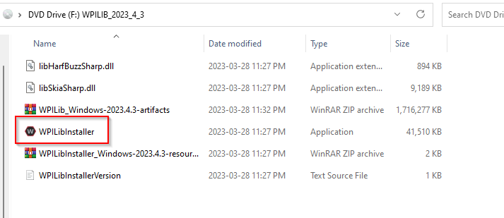
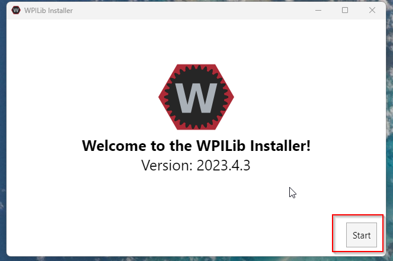
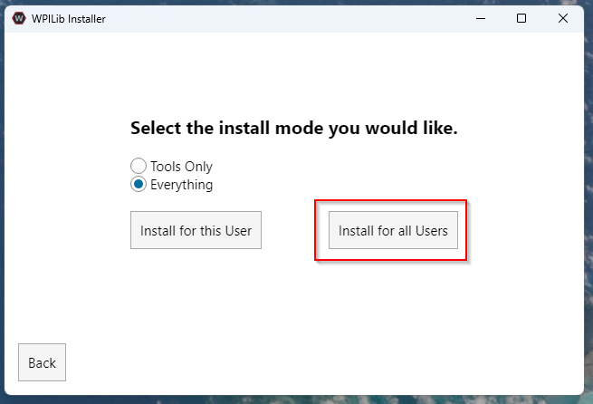
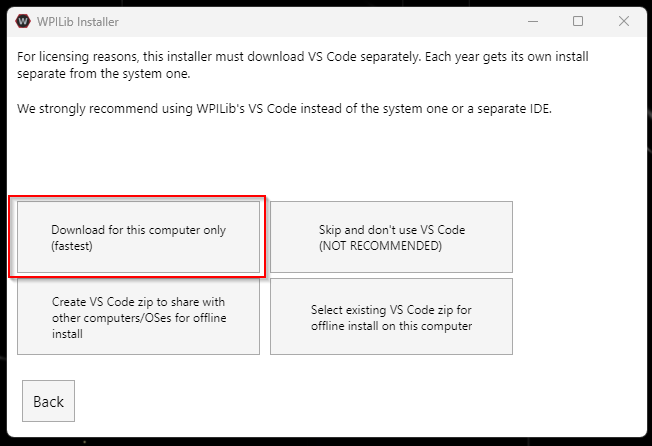
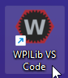
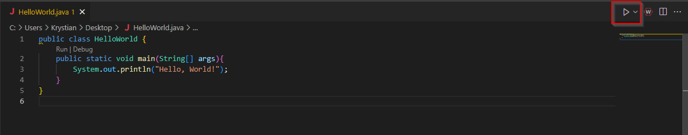
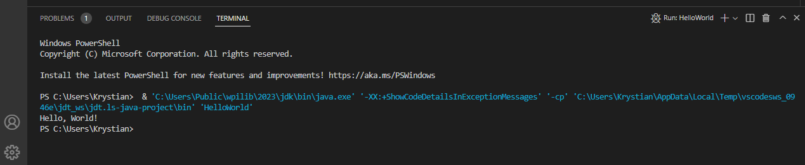

Week 1: Introduction to FRC and Robotics Programming
Introduction to FRC
The FIRST Robotics Competition (FRC) is a prestigious international competition at the high school level. Each year, starting in January, teams are given just six weeks to design, build, and program a robot to compete in an engineering challenge, unveiled in the form of a game. FRC embodies the excitement of a sport and the rigors of science and technology, promoting valuable life skills such as teamwork, leadership, and innovation. Watch the video below for more insights
About FIRST Robotics Competition (YouTube)
Introduction to Robotics Programming
In our FRC robotics program, we'll primarily be using Java to program our robot. You'll learn to code controls for different robot components and use inputs from joysticks in teleoperated mode. We'll also explore programming autonomous routines for the robot to perform specific tasks without manual control.
Working with sensors will be a crucial part of our learning process. These sensors provide feedback about the robot's environment, helping it make decisions like maintaining a specific distance from an object or aligning with a target. By the end of the program, you'll have a solid foundation in Java programming and practical experience in applying these skills in a real-world robotics context.
Introduction to Java
Java is a versatile, object-oriented programming language that's popular in various applications, including robotics. As a high-level language, it's designed to be human-readable, making it great for learning programming basics. What makes it particularly suitable for FRC robotics is its principle of "write once, run anywhere," which allows us to run our code on different types of hardware. Additionally, Java comes with robust libraries and tools, such as the WPILib library, specifically created for FRC robotics.
In the coming weeks, we'll be diving into the fundamental aspects of Java programming. We'll cover everything from variables, data types, and control flow to loops and functions. We'll also explore object-oriented programming (OOP) principles that help us design modular and manageable code—a critical aspect when dealing with complex systems like a robot.
Setup your development environment
Now let's get our development environment set up! The primary tools we'll be using are Visual Studio Code (vscode) and WPILib.
-
Visual Studio Code (vscode): vscode is a source code editor developed by Microsoft. It's lightweight, powerful, and supports a wide variety of programming languages, including Java. We'll use vscode to write, debug, and test our Java code. This will be installed as part of the WPILib package installer
-
WPILib: WPILib is the library we'll be using to program our robot. It provides a set of classes and methods that simplifies interacting with the hardware of our robot, so we don't need to start from scratch. WPILib is also equipped with a plugin for vscode, which will provide us with tools specifically designed to make FRC robot programming easier. To get both WPILib and vscode, download the latest release using this link: WPILib Github
Follow these steps to install WPILib:
- Navigate to your downloads folder and open the WPILib_Windows ISO file.
- Double-click the WPILibInstaller file. If the Windows security dialog opens, click 'More info,' then 'Run anyway.' 
- Once WPILib installer opens, click 'Start' 
- Click 'Install for all Users' 
- Select 'Download for this computer only,' then click 'Next.' 
- Click 'Finish' to complete the installation.
- Find the 'WPILib VS Code' shortcut on your desktop and open it.

Setup your FRC Game Tools
FRC Game Tools is a suite of software resources developed by FIRST Robotics Competition (FRC) to help teams manage and improve their gameplay. This comprehensive set of tools includes the FRC Driver Station, the FRC Dashboard, and the FRC Bridge Configuration Utility.
The FRC Driver Station is an essential component used during competition matches and testing sessions. It provides a user interface for driving the robot and displays important feedback such as battery voltage, robot connection status, match time, and more. It also includes options for enabling and disabling autonomous or teleoperated control of the robot.
The FRC Dashboard is a customizable interface that displays telemetry data from the robot in real-time. It can be tailored to display information pertinent to the team's needs, such as sensor readings, motor outputs, or camera feeds.
The FRC Bridge Configuration Utility is a tool that aids in setting up the wireless bridge on your robot for optimal communication with the Driver Station.
In order to make full use of these tools, teams should install FRC Game Tools on the driver station computer. Installation also includes the necessary components to communicate with the roboRIO controller. Regular updates are provided during the FRC season to account for rule changes and software improvements.
Remember to always download the latest version from the official website to ensure compatibility with the current FRC season's rules and hardware.
Introduction to Git/GitHub
Git is an essential tool that we'll be using throughout our robotics programming journey. It is a version control system that allows multiple people to work on a project at the same time without overwriting each other's changes. It tracks modifications and can revert back to any previous version of our code.
GitHub, on the other hand, is an online platform that uses Git to host our projects. It allows us to collaborate, review, and manage our codebase from anywhere in the world.
Follow these steps to get started with Git and GitHub:
-
Create a GitHub Account: Visit GitHub and create a new account if you don't already have one. Make sure to choose a username that you're comfortable sharing with others, as it will be public.
-
Send Your GitHub Username: Once you've set up your GitHub account, send your username to one of the programming mentors. They'll invite you to join our team's group on GitHub. This is where we'll host all our robot code.
-
Setup GitHub Client: To interact with our GitHub repositories more easily, we recommend using the GitHub Desktop client. Visit the GitHub Desktop page to download and install it. This client provides a graphical user interface for Git, making it easier to manage our codebase. Follow the instructions during the setup process, and when asked, log in using your GitHub account details.
You're now part of our programming team's GitHub group. In the coming weeks, we'll go over how we'll use Git and GitHub to manage our codebase, review each other's code, and track changes throughout the season.
First Steps in Java: Writing a "Hello, World!" Program
Now that you've set up your development environment, let's dive into writing our first Java program. In this exercise, we will write a simple "Hello, World!" program in Visual Studio Code. This program will print out the text "Hello, World!" to the console.
Here are the step-by-step instructions:
- Launch Visual Studio Code: Open Visual Studio Code (vscode) from your desktop or applications folder.
- Create a New Java Class: In the vscode menu bar, navigate to File > New File. A new file will be opened in the editor. Now, click File > Save As..., navigate to your Desktop and save this file with the name HelloWorld.java.
- Write the Program: In the new file, type or paste the following Java code:
public class HelloWorld { public static void main(String[] args) { System.out.println("Hello, World!"); } }
This code defines a HelloWorld class with a main method. The main method is the entry point for any Java application, and the System.out.println statement prints any text (string) in double quotations out to the console, in this case "Hello, World!".
Time to run your first application!
-
Run the Program: To run the program, find the green "Play" button in the top-right corner of the vscode window and click it. 
-
Check the Output: Look at the terminal at the bottom of the vscode window. You should see Hello, World! printed there. 
Congratulations, you've just written and run your first Java program!
Now, why not try changing the message? Instead of "Hello, World!", you can make the computer say anything you want! Just replace the text inside the quotation marks with your own message, and then run the program again. The console will print whatever you typed. It's your first step in getting the computer to do what you want.
Over the coming weeks, we'll dive into more complex concepts and start interacting with our robot using Java and WPILib. Welcome to the exciting world of FRC programming!